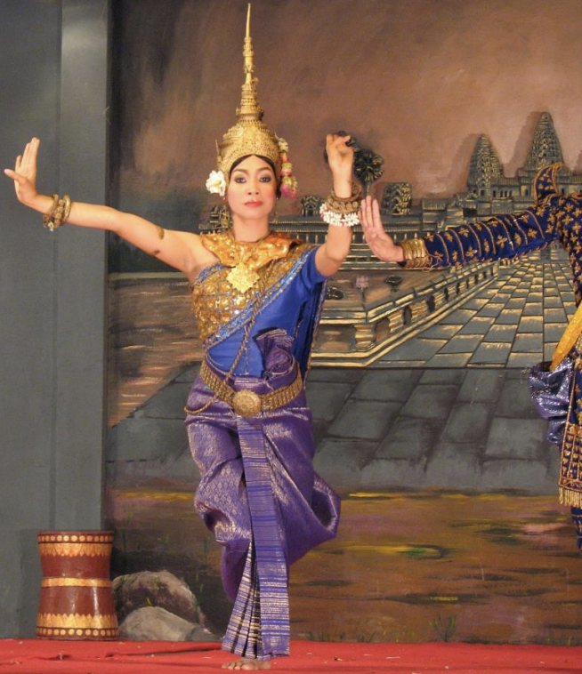

Ang mga damit na gawa sa Cambodia ay nagpapakita ng malawak na pinagmulan ng kanilang
kultura at pulitika. Ang Sampot ay ang tradisyunal na damit na mahalaga sa nakaraan at patuloy
na isinusuot ng mga tao. Ito ay may iba't ibang istilo batay sa klase. Ang mga nasa mas
mababang klase ay nagsusuot ng mas simpleng Sampot, samantalang ang mga nasa mas mataas
na klase ay nagsusuot ng mga Sampot Phamuong at Hoi na may mga kumplikadong disenyo at
maraming kulay. Ang isa pang mahalagang damit ay isang checkered scarf na tinatawag na
Krama. Malawak na ginagamit bilang isang fashion accessory at upang protektahan ang sarili
mula sa sikat ng araw

Ang Cambodian cuisine ay isang kumbinasyon ng mga lasa mula sa Thailand, Vietnam, at China.
Ang pangunahing bilihin ay kanin, na kadalasang sinasamahan ng ilang ulam sa bawat pagkain.
Ang Fish Amok ay isang kahanga-hangang ulam na binubuo ng gata ng niyog na kari na may
aroma ng pagluluto ng Khmer. Ang Kako soup, na may pinaghalong gulay at karne, at kuy tieu ay
isa pang sikat na pagkain

Ang Angkor Wat ay ang pinakakilala at mahusay na napanatili na istraktura sa parke. Ito ay
unang itinayo bilang isang Hindu na templo para kay diyos na si Vishnu noong unang bahagi ng
ika-12 siglo. Sa pagtatapos ng ika-12 siglo, naging isang templong Budista ito. Ang Angkor Wat,
na itinuturing na pinakamalaking relihiyosong monumento sa mundo, ay isang pangunahing
halimbawa ng Khmer architecture.